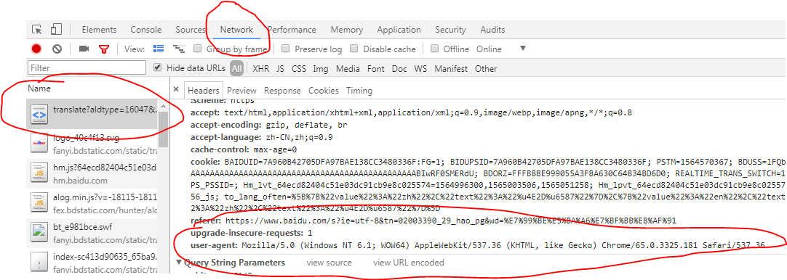
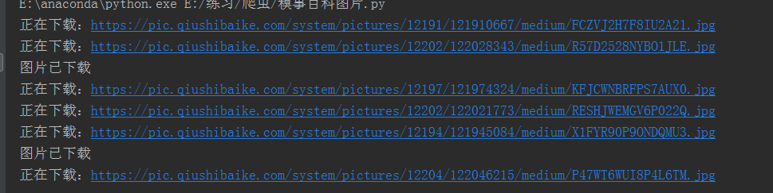

用到的库；
import requests
import os
from bs4 import BeautifulSoup
import time
from multiprocessing import Pool定义图片存储路径；
path = r'E:\爬虫\0805\\'请求头，模拟浏览器请求；
在浏览器中的位置，按f12打开开发者模式；

headers = {
'User-Agent': 'Mozilla/5.0 (Windows NT 6.1; WOW64) AppleWebKit/537.36 (KHTML, like Gecko) Chrome/65.0.3325.181 Safari/537.36'
}主函数；
def get_images(url):
data = 'https:'
res = requests.get(url,headers=headers)
soup = BeautifulSoup(res.text,'lxml')
url_infos = soup.select('div.thumb > a > img')
# print(url_infos)
for url_info in url_infos:
try:
urls = data+url_info.get('src')
if os.path.exists(path+urls.split('/')[-1]):
print('图片已下载')
else:
image = requests.get(urls,headers=headers)
with open(path+urls.split('/')[-1],'wb') as fp:
fp.write(image.content)
print('正在下载：'+urls)
time.sleep(0.5)
except Exception as e:
print(e)开始爬虫程序；
if __name__ == '__main__':
# 路由列表
urls = ['https://www.qiushibaike.com/imgrank/page/{}/'.format(i) for i in range(1,14)]
# 开启多进程爬取
pool = Pool()
pool.map(get_images,urls)
print('抓取完毕')爬取中；

打开文件夹查看爬取结果；
done
完整代码；
import requests
import os
from bs4 import BeautifulSoup
import time
from multiprocessing import Pool
"""
************常用爬虫库***********
requests
BeautifulSoup
pyquery
lxml
************爬虫框架***********
scrapy
三大解析方式：re,css,xpath
"""
headers = {
'User-Agent': 'Mozilla/5.0 (Windows NT 6.1; WOW64) AppleWebKit/537.36 (KHTML, like Gecko) Chrome/65.0.3325.181 Safari/537.36'
}
path = r'E:\爬虫\0805\\'
def get_images(url):
data = 'https:'
res = requests.get(url,headers=headers)
soup = BeautifulSoup(res.text,'lxml')
url_infos = soup.select('div.thumb > a > img')
# print(url_infos)
for url_info in url_infos:
try:
urls = data+url_info.get('src')
if os.path.exists(path+urls.split('/')[-1]):
print('图片已下载')
else:
image = requests.get(urls,headers=headers)
with open(path+urls.split('/')[-1],'wb') as fp:
fp.write(image.content)
print('正在下载：'+urls)
time.sleep(0.5)
except Exception as e:
print(e)
if __name__ == '__main__':
# 路由列表
urls = ['https://www.qiushibaike.com/imgrank/page/{}/'.format(i) for i in range(1,14)]
# 开启多进程爬取
pool = Pool()
pool.map(get_images,urls)
print('抓取完毕')